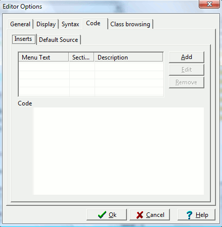

This allows the user to define a menu option that
adds code snippets while you are programming. The idea is that if you
have code that you frequently use (e.g. a class or function that you
almost always add to your programs), then you can set up a menu
selection that automatically adds this code to your current project at the current cursor position.

To add a code snippet to the menu, go to the Tools menu and select Editor Options. Then, click on the Add button. The Add Code Insert Entry
dialog will allow you to name the new menu entry and a description of
what the entry will do. Then, add the code snippet to the Code textbox. When you click the Ok button, your code snippet will be added to the Edit menu under Insert. Selecting that menu item will insert your Code into the IDE at the current cursor position.